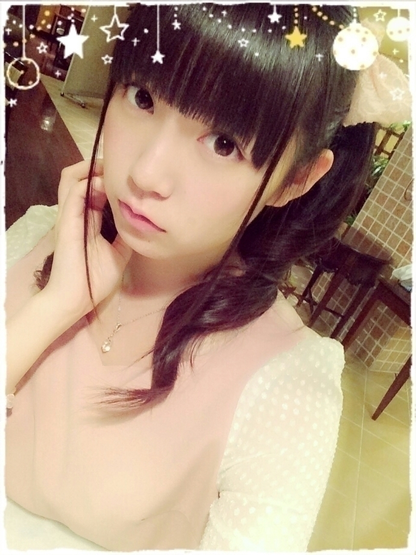
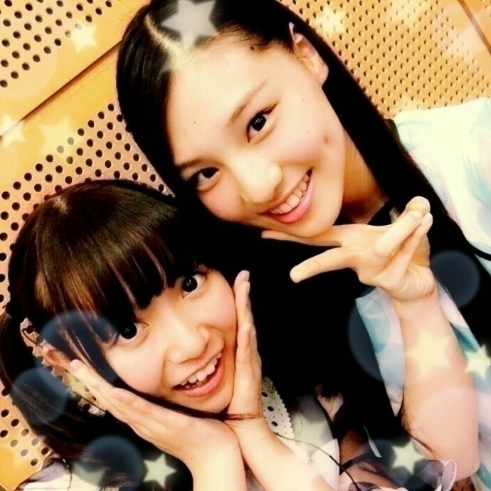
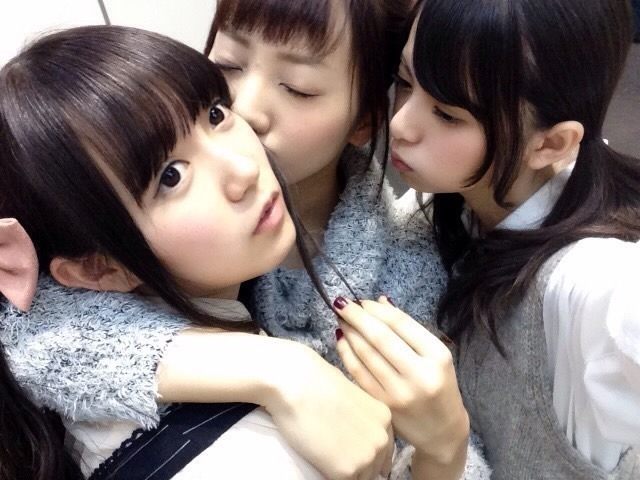

| 2014/12 31 Wed | ひめたん-OoO-その509 |

2014年ありがとうございました( ˇωˇ )
最近のことを
順番に振り返っていきますよ～
28日は今年最後の握手会でした！
京都来てくれたみなさん
ありがとうございました♡
今回は本当に
たくさんのひとが遊びにきてくれて
ひめ嬉しかったよ～（；；）
「ひめ～待つの疲れたよ～」って
言われちゃったけれど
それ嬉しい悲鳴です♡♡
年末の忙しい中だったのに
会いに来てくれてありがとう！
2部 ひめたん結び
3部 安定のついんてーる

これ、気づきました？
UTBさんの姫計画で着たお洋服を
撮影のあといただいたので
着てみました(∗ ˊωˋ ∗)
結構好評だったので嬉しい～
1部 おろし巻き

あ、写メは違うの
当日撮る時間なかったのん
ごめんね( >_< )
これはNOGIBINGO!3の#4#5
花嫁回で着てたワンピース！
握手会はおろし巻きでした～
このときは
11月に大阪でやった
スペシャルライブの感想を
たくさん聞かせてもらいました\♡/
アンダーライブで務めたガルルのセンターを
スペシャルライブでも披露できて
良かったな～って改めて思いました！
もう1ヶ月も前のことだけど
その時のライブ思い出すと
やっぱり楽しかったなあ～
クリスマスショーやアンダーライブの感想
あとは年末のご挨拶ができて
よかったです( ˇωˇ )
昨日は「乃木坂46大感謝祭2014」でした！
いおりん♡♡

それでね、今回初めてのイベントで
普段のライブとは違う感じで
最初どうなるかな～？って思ってたら
なんだかアットホームな雰囲気で
とっても居心地良かった
ひめは好きだよ⊂( ˆoˆ )⊃
一年を振り返ったり
出し物をしたり、ライブもした！
今年の一番最後に
盛りだくさんで充実したイベントができて
たくさんありがとうできて
良い締めくくりになったな～と思います❁
昼の部ではサンドアートを披露しました
緊張したよう～
でも収録とは違って
みなさんと一緒に緊張感が味わえて
貴重な時間だったかなあと思います♪
夜の部ではクイズ王の古川さんと
司会進行の高橋大輔さんが
びーむをしてくださいました(<・ω・>)
ふるたんびーむ だいすけびーむ！
罰ゲームとは言わず
お二人にはこれからも必殺技
使っていただきたい。笑
来年も身内感溢れる感じの
イベントあったらいいな( ˇωˇ )
また機会があったら
その時は遊びに来てね～＊
一緒にまったりしましょうー
昨日来てくださったみなさん
お忙しい中ありがとうございました！

ということで
2014年の総括でもしようかな。
2014年は今までで一番
たくさんの出会いがあった一年(＊´v`＊)
ライブは大きな会場を
たくさん用意していただいて
ひめを発見したよって言ってもらえたり
握手会は部数も増えて
足を運んでくださるひとも増えて
たくさんのはじめましてがありました！
日記に遊びに来てくれるひとも増えたよね♡
ひめたんはこの出会いを
ずっと大切にしていきたいです(＊´ω`＊)
去年、おととし、
ずっと私を知ってくれてるひととも
さらに仲良くなれた一年でした♡
それから活動も充実してたなあ～
個人的には乃木のののMCが
本当に楽しかったし
私の中でとっても大きいこと\( ˆoˆ )/
ずっとやりたかったから
MC期間が幸せでした\❁/
たくさん学んだ3ヶ月半でした～
乃木ののをきっかけに
握手会来てみたよ～ってひともいてくれて
私を知るきっかけになったのかな？
アンダーメンバーが活躍する場を
与えられた一年でもありました
アンダーライブは
私やみんなを成長させてくれました
これは最近書いたばかりだからいいかな？
のぎ天ではたくさんの貴重な経験を
させていただきました(っ´ω`c)
アンダーメンバー中心で
ひとつ番組が出来るなんて
本当にありがたいこと。
2014年もファンの皆様、スタッフさん
たくさんの人に支えられて
こうして活動することができました
私に、乃木坂46に
携わってくださったすべての人へ
一年間ありがとうございました！
来年はもっと飛躍できる一年に
なるよう頑張ります
これからもよろしくお願いします\( ˆoˆ )/
来年は高校卒業の年
私にとって節目になる年かもしれません。
さあ！ひめたんの年にするぞー！
ぴょーん

今年最後の日記だから
写メ多めにしてみましたよ～
あ、前回の日記のコメントで
みんなひめたんの振り返りしてくれて
ありがとう⊂( ˆoˆ )⊃
これみんなのコメント読みながら
書いてみた日記だよ♡
よいお年を！
(＊´・ω・＊)
コメント(1194)
2014/12/31 23:12